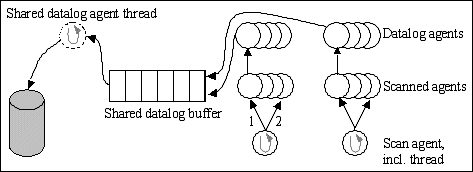

In Adroit data logging is a synchronous activity in that it is done internally on the same
thread that creates the value change. Click for more details:
For example, plant changes arrive into Adroit via one of the many scan
threads. When a scan agent (or thread) has detected a value change, the
thread updates the agent as well as any Agent Server clients interested
in the information because of their subscription to this value. The datalog
agent is one such client.
Depending on the:
size of the data log file
speed of the hard disk
available memory and other factors
Writing the new value to disk
(or to Window’s file caching subsystem) may take a long time. This affects
the ability of the thread to timeously update the Agent Server with any
other ‘real-time’ changes from the same scan transaction. Click for more details:
For example, suppose 256 words of digital information changes every
second, that is, 4096 discrete digital points changing per second. The
scan agent must be able to effectively update every agent well within
240 uS per agent if it is going to be able to maintain the configured
one-second-transaction rate. A sluggish data logging sub-system will definitely
prevent this from happening.
All changes arriving at the data logging subsystem are now added to
a "datalog change queue". Click for more details:
This mechanism is similar to the real-time
update mechanism within Adroit, however; now the updates that occur because
of historical logging requirements do not affect the throughput of the
remaining real-time updates. This is a fast operation and releases the
calling thread immediately.
A separate, asynchronous thread reads the data from the queue and sends
the change to the data logging mechanisms. From the above it is obvious
that the size of the queue must be such that it is able to handle the
maximum spike of changed values that a plant can expect. The maximum number
of changes is generally proportional to the number of logged tags.
This queue is global and has a default size of 500Kb, which allows
for an approximate spike of 11000 changes. It is possible that the sustained
(not the instantaneous) rate of plant changes will exceed the rate at which
the data logging subsystem is able to operate.
In this case, the Agent Server is simply not capable
of handling the data logging requirement - the PC and/or its subsystems
will require upgrading or the data logging task musts be split over separate
Agent Servers.

Tuning Parameters
This data log system buffer queue size can be changed by clicking the
Advanced button in the Datalog
agent edit dialog, use the Datalog
system buffer size (Kb) field to specify the required buffer queue
size.
It is recommended to use the buttons to increase/decrease
this value in 64 KB increments/decrements.

 Click for more details:
Click for more details: